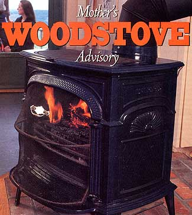
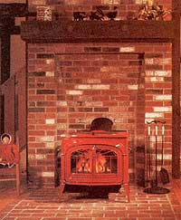
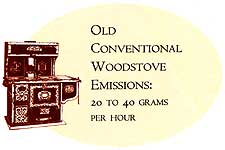
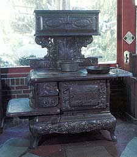
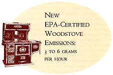
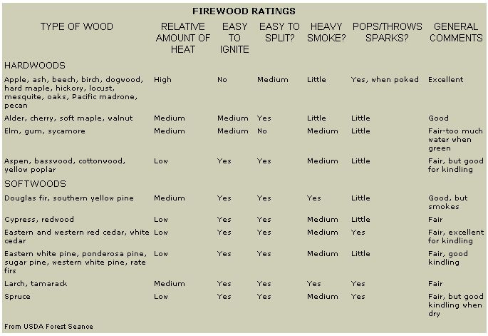
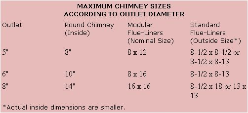
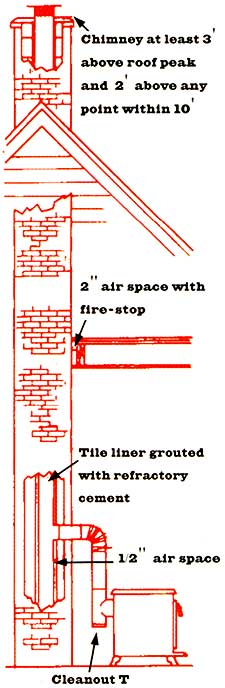
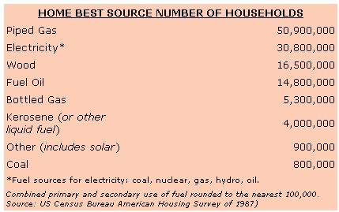

I.THE NEW GENERATION OF STOVES
IN INVENTING THE WOODstove, Ben Franklin built a freestanding fireplace with an open front and cast-iron sides. A revolutionary idea at the time, the Pennsylvania Fireplace, as it was called, soon made open fireplaces obsolete, at least in terms of heating efficiency.
For about 200 years after that, woodstoves remained basically unchanged. Then along came the energy crisis of the 1970s, and everyone clamored for alternative ways to heat homes. The woodstove industry boomed, as hundreds of companies started producing a huge range of woodburning stoves, many of which are still in commission. The major difference between these stoves and Franklin's was that they included doors with airtight gasketing for greater control of combustion and heat output.
As dramatic as these two revolutions in home-heating technology were, another revolution is upon us right now, brought about mainly by increasingly stringent air-quality regulations and helped along by the state of affairs in the Middle East and the rise in fuel costs associated with it. The fact is that when uncertainty clouds our fuel supplies, we turn to wood, mostly as a supplemental heat source but occasionally as a primary one.
Wood-smoke pollution was a byproduct of the '70 woodheating revolution. As woodstove popularity boomed, pollution from wood smoke became a serious problem. This was especially true in areas such as river valleys, where smoke from various sources collects. Wood smoke also proved troublesome in communities located at high elevations, since the smoke couldn't dissipate in the thin mountain air. Denver is a well-known example.
This pollution resulted not only from the sheer number of woodstoves in use, but also from the stoves' technology. While the airtight design of most stoves produced in the '70s made them more useful, it contributed to air pollution: With its air supply choked down to get long burn times, the lire smoldered instead of burning briskly. The result was inefficient combustion and smoke. Eventually, it became apparent that burning wood, like driving automobiles, was a social act-quite possibly one with global consequences.
Areas with poor air quality began regulating wood heating. Soon, entire states, notably Oregon and Colorado, enacted legislation controlling the sale of woodstoves. Then the federal government stepped in. By 1986, the U.S. Environmental Protection Agency had established a multiphase federal performance standard. The toughest phase of the standard takes effect this year. Any stove made or imported for sale in the United States must now meet specific emissions limits, as measured by the amount of particulates in the smoke.
In producing these new clean-burning stoves, manufacturers have taken one of two routes. One has been to include a catalytic combustor in the stove. The catalytic combustor does basically the same thing as a catalytic converter in a car. It burns off smoke and fumes that would otherwise shoot out the exhaust or drift up a chimney. The catalytic combustor consists of a honeycomb-shaped substrate coated with a catalyst, usually a precious metal such as platinum or palladium. This device is placed in the path of the smoke. When the smoke passes through the honeycomb, the catalyst lowers the smoke's burning temperature, causing it to ignite. The result is a more efficient burn and less smoke up the chimney. Most stove manufacturers now offer catalytic models in which the combustor is an integral part of the stove. It is also possible to retrofit some older stoves with combustors.
The other method used to reduce wood-smoke pollution is an interior stove design that accomplishes more complete combustion of the wood. This is done through specific engineering of the airflow inside the stove and the introduction of secondary combustion air, which is piped in to the firebox at strategic points to ignite the unburned wood gases before they leave the firebox. Also, fully lining the firebox with insulating firebrick ensures a higher temperature fire in these low-emission non-catalytic stoves.
The result of such technological advances is a new generation of woodstoves, almost twice as efficient as their predecessors. While older woodstoves had efficiency ratings of 40-50%, today's certified stoves boast efficiencies of 70-80%. This translates directly into more heat per load of wood, saving you money if you buy your firewood, or saving you time if you cut your own, and-at the same time-helping you keep the air in your valley cleaner.
Tips from a homesteader
WINTER IS coming! Is this the right year to invest in a new heatingstove? If you live in an area where strict wood burning regulations are in effect, you might have to. If you don't live in such an area, you may still have viable alternatives: Make your existing stove perform better by getting the stove to produce more heat and hold a fire better; improve the airflow in your house to eliminate hot and cold spots; or replace your old stove with a more efficient secondhand one.
Improving the performance of the stove itself can be as simple as replacing a leaky door gasket on an airtight model, or as involved as completely rebuilding a drafty antique.
In seeking optimum performance from fabricated steel airtights, like Earth Stoves or Blaze-Kings, first replace any frayed or missing door gaskets. These seals are made of fiberglass, and they do wear out and get damaged by careless handling of wood.
If the stove has a thermostat, make sure that it operates freely and that its draft door closes tightly. If possible, observe its action as the stove heats up. The draft should be wide open when the stove is cold and should slowly close as it comes up to its normal operating temperature.
Check welds for cracks, especially if there is evidence that the stove has been overheated. Even a small crack can admit enough air to defeat the thermostat. Air leaks can often be detected by moving a burning stick of incense around any suspect areas when the stove is operating. The smoke trail will lead you to a leak.
Modern cast-iron stoves can develop leaks where the various cast pieces are joined. These joints are carefully sealed at the factory, but after years of heating/cooling cycles, moving the stove with even a small amount of careless handling can affect the integrity of these seals.
Antique stoves, even those that produce lots of heat, are generally considered more decorative than functional because their abundant air leaks result in high fuel consumption. Improving the performance of drafty antique stoves presents a whole new challenge. Don't be too concerned if the door on your antique doesn't have an airtight seal: Every stove needs some air if it's going to support a fire. As long as the rest of the stove is made airtight, the draft can be adjusted to compensate.
Most cast-iron stoves, like the box or parlor models, can be significantly improved by simply sealing all of the joints. Stove cement is available at your nearest hardware store or stove dealer, in tubes that will fit an ordinary caulking gun.
Antique wood-fired cookstoves just can't be made airtight, because of the many openings that admit air to the firebox. However, because of their large radiating surfaces and mass, they can be efficient heaters as well as wonderful ranges.
Cookstoves generally have tiny fireboxes. Two good ways to make them heat efficiently are keeping a floor of ash on the grates to minimize the airflow, and maintaining a constant hardwood fire. A chunk or two of coal at bedtime will keep the stove warm all night. Coal must be placed in the middle of the firebox, on a bed of ash. Never pile coal on the grates or against the sides of a firebox that was not specifically built for coal.
Stoves that have a thin, sheet-metal liner supported by cast-iron end plates will usually need to have the liner replaced. Disassemble the stove and keep the old liner to use as a pattern for the new one. When our stove needed its liner replaced, we had a sheet-metal shop make the new one out of 18-gauge black iron, which was much heavier than the original. Never use galvanized metal on stove parts, by the way. The fumes produced by the heated zinc-plating are lethal. When you reassemble the stove, be sure to seal the connection between the liner and both end plates with stove cement.
When disassembling an old stove, an easy way to remove rusted nuts from their respective bolts is to tighten them until they break. It's surprising how easily a rusted screw will break when tightened. Another trick to loosen badly rusted parts is to apply heat. Heat the rusted part until it glows red for a moment, let it cool, and remove with normal tools. Never use a hammer on cast iron; the stuff is unbelievably fragile.
When reassembling the stove, always use new nuts and bolts. When assembling parts that will need to be removed for periodic cleaning and maintenance, use stainless-steel nuts and bolts, available at most hardware stores and lumberyards. They cost more, but you will be using so few that the price difference is insignificant. When the time comes to remove them, you'll appreciate the small investment.
Assuming that you've tightened up your stove and it is operating at peak efficiency, let's get the heat to where it's needed.
Ceiling fans are a cost-effective way to reduce fuel bills and even out temperatures. When we installed a ceiling fan near our stove, the temperature evened out much better, and we cut down on wood consumption.
If your home has high ceilings or an open loft, most of the heat will rise to those areas and eventually migrate out through the roof. A well-placed fan will move this stratified hot air back down to your living spaces and lower the upstairs temperature at the same time.
If your home has a forced-air furnace in addition to a woodstove, you have a wonderful opportunity to even out temperatures and to keep heated air from collecting high in the building. Most furnaces have a "summer switch" that allows the blower to run without having the heat on. Install an air duct at the highest point in the house, and route this duct into the cold air return of the furnace. Then when your woodstove is running and the heated air rises, the new air duct will direct the heated air down through the furnace and redistribute it throughout the house.
And finally, here's a neat trick we learned by accident. Ever light your cold stove only to have it start pouring smoke into the room? Try this: Open the nearest exterior door. The incoming rush of air will reverse the airflow in the stove. You need leave the door open only as long as it takes for the chimney to draw-usually a few seconds.
If you decide to replace your woodstove with a secondhand one, don't assume that bigger means better. A heating stove should be no larger than necessary. A huge stove in a small space will often be operating in the cool temperature range that assures a rapid buildup of dangerous chimney deposits.
Of all the stoves we ever used, our all-time favorite was a circulator sold by Montgomery Ward in the '30s-we found this treasure on a neighbor's trash pile. Before that we had a stove that was a real fuel miser and produced an incredible amount of heat, but we had to overheat the room in which it sat to get any warmth to the rest of the house. This first woodstove-like all stoves designed to produce heat off every surface-was a "radiator." What we needed was a "circulator."
A circulator encloses a radiator in a metal box, leaving air space all around the stove and openings at the top and bottom. The air between the stove and the box heats quickly and rises out of the top opening as cold air from the floor enters the bottom opening to get heated. Incidentally, the cooler temperature of the outer jacket of a circulating stove is a distinct advantage if you have small children. An accidental bump into the stove will be uncomfortable, but it generally won't result in a bum.
This heater made an amazing difference in warming our home. Instead of cooking us out of one room and leaving the rest of the house cold, the heat-which now poured from the top of the stove-created a convective loop that warmed the entire house.
No matter what type you choose, heating with a woodstove is never as easy as turning up a thermostat. But ease isn't everything. Now that you've got that old stove back in top form, stoke it up, sit back, and bathe in the glow.
H. Skip Thomsen lives in Manzanita, Oregon. He wrote "A Homestead East of Mt. Hood" for issue 65 of Mother.
III. STRAIGHT ANSWERS TO (WOOD) BURNING QUESTIONS
Good Tending
TO SEE IF YOUR WOODSTOVEis operating properly, check the exhaust coming out of the woodstove chimney; the smoke is your operational barometer. If the fire is burning properly, you should see the transparent white steam of evaporating water only-darker and opaque smoke will be just slightly visible. The darker the color of the exhaust, the less efficiently you are operating the appliance. You may need to adjust the operation of your woodstove to decrease the opacity of the exhaust (that is, the density of the smoke.)
Good drafting conditions occur when the chimney consistently draws air into the woodstove at a high enough rate to provide adequate oxygen for complete burning. To create this draft, you must preheat the chimney. Some chimneys require longer preheating periods than others, depending on their height, outside exposure and construction. Typically, preheating requires five to 15 minutes of vigorous firing.
To start up, remove all but a thin layer of ashes from your firebox. Insert five or six crumpled pieces of newspaper and dry, finely split kindling. Firmly open the dampers (air supply to the woodstove and ignite the paper on all sides. You may find it necessary to leave the stove door slightly ajar during the initial moments of the fire. After the first load ignites, add more kindling until the chimney is preheated. At this point, the fire should be burning briskly.
When reloading, place finely split pieces of wood on the charcoal bed and fully open the air supply. Using smaller pieces of wood during reloading encourages rapid rehearing of the chimney.
You'll know the chimney is preheated when each large piece of wood you add to the fire burns vigorously, without a loss in intensity of the fire. Keep listening to the sound of the air entering the stove. A constant and rising movement of air signals good drafting conditions have been achieved.
And don't forget to examine your chimney exhausts during start-up and refueling-the two periods in the operation of a woodstove that are most likely to create smoky emissions. These smoky periods can be dramatically minimized by following proper procedures.
Some woodstove manufacturers provide specific guidelines for start-up and preheating phases that involve the indirect monitoring of chimney-exhaust temperatures. Typically, chimney-connector temperatures must reach 500-600 °F before the chimney is fully primed. Follow your manufacturer's instructions when temperatures and start-up procedures are specified.
Although all woodstoves require preheating during start-up and reloading, their operation afterward varies somewhat. Woodstoves that use catalytic combustors require the monitoring of temperatures and air supply to ensure that the catalyst engages at appropriate times in the combustion cycle. Generally, catalytic stoves require lower combustion temperatures in the firebox to burn cleanly. At 500-1000 °F, the catalyst ignites, burning the volatile gases and particulates. Noncatalytic stoves attain much higher temperatures in the combustion path before the gases and particulates burn. Always refer to your woodstove manufacturer's operation manual and follow the instructions for your particular make and model.
During the warmer seasons of spring and fall, control the total heat output by limiting the amount of fuel (wood) rather than by closing down the air supply. Make shorter, hotter fires using more finely split wood. The actual air supply settings will vary according to your stove instructions, but the fuel loadings will be consistently smaller. Let the fire burn out rather than smolder at low air-supply settings. When your home requires more heat, restart the fire with kindling as always, but add smaller fuel loads. This allows your stove to operate at maximum efficiency and with minimum emissions. Avoid the temptation of building a big fire and then starving it for air.
THE SEASONING,or drying, process allows most of the natural moisture found in wood to evaporate, making it easier to burn. To properly season wood, split the logs as soon as possible and stack them in a dry spot for six to 18 months. (Wood dries from the surface inward; unsplit pieces dry very slowly. Pile the wood loosely, allowing air to circulate through the split logs. Hardwoods take longer to dry than soft woods; humidity and temperature levels also affect drying times.
In the firebox, avoid placing pieces of wood in parallel directions, where they may stack too closely. Vary the position of the wood to maximize the exposed surface area of each piece of wood. Only use wood properly sized for your stove's fire chamber. Complete wood combustion requires wood (fuel, temperature (heat and oxygen (air to burn completely and clearly.
Never burn garbage, plastic, foil or any kind of chemically treated or painted wood. They all produce noxious fumes which are dangerous and highly polluting. Additionally, if you have a catalytic stove, the residue from burning plastics may clog the catalytic combustor.
A Sootable Subject
PROPERLY DESIGNED CHIMNEYin good repair is a prerequisite for any safe woodstove installation. The flue must be made of a suitably heat-resistant material; it must be separated from combustibles by ,the mandated distance; it must be leak proof and the correct diameter and height. Based on these factors, you'll have to decide whether to use the existing chimney as is, repair it or give up and install a new one.
IS IT THE RIGHT SIZE? Measure the size of your chimney at the top and calculate its cross-sectional area. Regulations prohibit attaching a woodstove to a chimney that has a cross-sectional area smaller than, or more than three times larger than, the stove's outlet. Be forewarned: A masonry chimney designed for a fireplace is likely to present problems for a woodstove. Cross-sectional area accrues rapidly with increases in size-an 8"-diameter flue has almost twice as much area as one with a diameter of 6"-and fireplaces usually have much larger chimneys. The chart below summarizes maximum chimney sizes for common outlets.
Remember that these are maximums. Within the guidelines, larger is not better. Because excess chimney capacity slows smoke and cools it, too large a chimney reduces draft and increases creosote accumulation. Most experts recommend that the chimney have no more than twice the cross-sectional area of the outlet, and they consider equal or only slightly larger to be ideal.
The chimney must also be tall enough. A tall chimney draws better than a short one, and 12'-from the stovepipe connector to the top-is a practical minimum. Additionally, the top of the chimney must be at least j' above the roof and at least 2' higher than any part of the building within 10'.
EXISTING MASONRY CHIMNEYS.Any masonry chimney used to vent a woodstove must be lined-usually with clay flue tiles, which should be mortared at the joints with refractory cement and separated from the stone, brick or block work by a 1/2" air space. If there is a lining, examine it to see if it's in good shape. The interior surface shouldn't show signs of chipping. Likewise, the exterior masonry and joints should be sound.
Some further regulations concerning masonry chimneys used for woodstoves: Structural chimney walls must be at least 4" thick if made from brick and at least 12" thick if made from stone. Solid 4" cement block is permitted, but hollow blocks aren't acceptable. Interior chimneys must be spaced at least 2" from any combustible material, and exterior chimneys must have a C space to the house. In both cases, the air space must have a firestop of noncombustible material (such as metal of at least 26 gauge no more than 1/2" thick. Only one appliance may be connected to a flue, and all other openings must be sealed. Ideally, the only other penetration of the liner will be a low, airtight cleanout door.
Okay, let's be honest. The likelihood of finding an existing chimney that meets all of these guidelines is not too great. There are around 20 million chimneys serving wood-burning appliances in the U.S., and experts estimate that at least half are unsafe. Why so poor a showing? Fireplace chimneys weren't designed for the stress of intense chimney tires caused by the heavy creosote deposited by controlled-combustion woodstoves. As a result, chimney construction guidelines have been changed as more has been learned about the problems posed by woodstoves. For example, the C airspace requirement for exterior chimneys is a new NFPA (National Fire Protection Association change.
RELINING. What do you do if your chimney isn't safe for a woodstove? If the chimney is deficient because it's too large, lacks a liner or is in poor repair, relining may be an option. There are two basic approaches, each with a number of variations. These are not do-it-yourself systems, so you'll be limited to those products offered by pros in your area. The most common type is a stainless-steel pipe-usually a special spiral wound, corrugated tube-surrounded by insulation. Masonry liners, wherein thermal concrete is poured around a removable form or lowered in precast sections, are enjoying increasing popularity because they add strength to deteriorated chimneys and resist thermal shock very well.
Both approaches have good durability records, though masonry liners are better established, having been in use in Europe for more than 30 years. So far, stainless-steel systems are usually a little less costly. In any case, expel to pay between $25 and $50 per foot, depending on the details of the job. For the price, you'll get a safe chimney that has great draft and that accumulates very little creosote.
INSULATED METAL CHIMNEYS. The other option, if you're confronted with a deficient masonry chimney, is to abandon it. For about the cost of relining, you can install a factory built, insulated metal chimney. These are durable stainless-steel systems with prefabricated wall, floor and roof "pass-throughs." They typically can pass within 2" of combustibles, so, depending on the layout of your home, it may not be difficult to install one between wall studs or ceiling joists and rafters.
There are three basic types of factory built chimney: triplewall, air-insulated; double-wall, solid-insulated; and double-wall, solid-insulated, air-cooled. Any of the three will work, but most installers now prefer the last two because they're more compact. Solid-insulated, double-wall chimneys have been around for over a decade and are widely available from a variety of manufacturers. Double-wall, solid-insulated, air-cooled chimneys-a more recent development by Simpson Dura-Vent-attempt to answer concerns about warpage of double-wall chimneys under the intense heat of chimney fires. The design allows the inside liner to flex outward and up and down as it heats, and it incorporates holes for air to cool the outer metal wall and the outside of the ceramic insulation during a chimney fire. All factory-built chimneys for controlled-combustion wood-burning appliances and even for fireplaces in New York City must now use UL 103 HT (high temperature: 2,100 °F) stainless pipe to solve the warpage problems encountered with lower temperature rated systems.
HOME BEST SOURCE NUMBEROF HOUSEHOLDS Piped Gas 50,900,000 Electricity* 30,800,000 Wood 16,500,000 Fuel Oil 14,800,000 Bottled Gas 5,300,000 Kerosene ( or other liquid fuel ) 4,000,000 Other ( includes solar ) 900,000 Coal 800,000 *Fuel sources for electricity: coal, nuclear, gas, hydro, oil. Combined primary and secondary use of fuel rounded to the nearest 100,000. Source: US Census Bureau American Housing Survey of 1987)
Portions of this special section are based on "A New Generation of Stoves," which appeared in The Fireside Advisor, Volume III, 1990-91, available for $4 from Vermont Castings, Inc., Prince St., Randolph, VT 05060; and on educational material produced by the Wood Heating Education and Research Foundation send an SASE for brochures to WHERF, trot Connecticut Ave., NW, Suite boo, Washington, DC 20036).
|
 Hold the oil. A brand-new, 200- pear-old heating solution. |
 Cookstoves pull double duty is the kitchen, working as both efficient ranges and heaters. |
 |
|
|
 |
 |
|
 |
 |
 |
|
 |
|
|